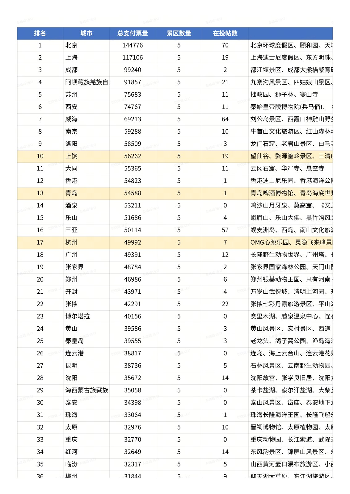

Q
去哪儿网
用户增长与运营—内容增长部实习生
策略优化
参与「KOS视频封面&标题AI优化方案」1.0至2.0迭代，落地时效场景、悬念式利益点、封面视觉升级三大策略，推动平均封面点击率从 3.9%提升至5.9%，日均引流UV 提升20%，潜新客占比从22.1%提升至31.2%。
增长策略
基于小红书聚光、灵犀及内部投放数据，搭建“热度—成本—转化”三维评分模型，从66个候选城市中筛选出 12个“高热度+低CAC”重点城市，形成策略地图并支持内容扩量与资源配置决策。
内容运营
负责30个KOS账号的内容生产与运营，覆盖酒店、机票、门票、跟团游4条业务线，累计产出短视频 200+条；沉淀可复用的埋词词包与标题模板。

从封面与标题优化，到城市策略地图和内容规模化生产。
CTR ↑2ppUV ↑20%潜新客 ↑9.1pp